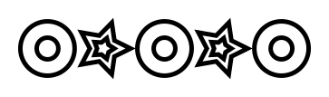

The Natural Numbers
The natural numbers are the whole numbers, or integers, greater than or equal to zero. In other words the numbers 0, 1, 2, 3, ... (Some people define the natural numbers as starting at 1, not 0. It doesn't greatly matter for our purposes which definition you choose, but here we'll assume they start at 0.)
One interesting property of the natural numbers is that we can define them recursively. That is, we can define them in terms of themselves. This kind of circular definition seems like it would lead to nonsense. We avoid this by including in the definition a base case that ends the recursion. Concretely, the definition is:
A natural number n is
- 0; or
- 1 +
m, wheremis a natural number.
The case for 0 is the base case, whilst the other case is recursive as it defines a natural number n in terms of a natural number m. Because m is always smaller than n, and the base case is the smallest possible natural number, this definition defines all of the natural numbers.
Given a natural number, say, 3, we can break it down using the definition above as follows:
3 = 1 + 2 = 1 + (1 + 1) = 1 + (1 + (1 + 0))
We use the recursive rule to expand the equation until we cannot use it any more. We then use the base case to stop the recursion.
Structural Recursion
Now on to structural recursion. The structural recursion pattern for the natural numbers gives us two things:
- a reusable code skeleton for processing any natural number; and
- the guarantee that we can use this skeleton to implement any computation on natural numbers.
Remember we wrote boxes as
def boxes(count: Int): Image =
count match {
case 0 => Image.empty
case n => aBox.beside(boxes(n-1))
}When we developed boxes we just seemed to stumble upon this pattern.
Here we see that this pattern follows directly from the definition of the natural numbers.
Remember the recursive definition of the natural numbers: a natural number n is
- 0; or
- 1 +
m, wheremis a natural number.
The patterns in the match expression exactly match this definition. The expression
count match {
case 0 => ???
case n => ???
}means we're checking count for two cases, the case when count is 0, and the case when count is any other natural number n (which is 1 + m).
The right hand side of the match expression says what we do in each case. The case for zero is Image.empty. The case for n is aBox.beside(boxes(n-1)).
Now for the really important point.
Notice that the structure of the right-hand side mirrors the structure of the natural number we match.
When we match the base case 0, our result is the base case Image.empty. When we match the recursive case n the structure of the right hand side matches the structure of the recursive case in the definition of natural numbers.
The definition states that n is 1 + m.
On the right-hand side we replace 1 with aBox, we replace + with beside, and we recursively call boxes with m (which is n-1) where the definition recurses.
def boxes(count: Int): Image =
count match {
case 0 => Image.empty
case n => aBox.beside(boxes(n-1))
}To reiterate, the left hand side of the match expression exactly matches the definition of natural numbers. The right-hand also matches the definition but we replace natural numbers with images. The image that is equivalent to zero is Image.empty. The image that is equivalent to 1 + m is aBox.beside(boxes(m)).
This general pattern holds for anything we care to write that transforms the natural numbers into some other type.
We always have a match expression.
We always have the two patterns, corresponding to the base and recursive cases.
The right hand side expressions always consist of the base case, and the recursive case which itself has a result specific substitute for 1 and +, and a recursive call for n-1.
Structural Recursion over Natural Numbers Pattern
The general pattern for structural recursion over the natural numbers is
def name(count: Int): Result =
count match {
case 0 => resultBase
case n => resultUnit add name(n-1)
}where Result, resultBase, resultUnit, and add are specific to the problem we're solving.
So to implement a structural recursion over the natural numbers we must
- recognise the method we're writing has a natural number as it's input;
- work out the result type; and
- decide what should be the base, unit, and addition for the result.
We're now ready to go explore the fun that can be had with this simple but powerful tool.
Proofs and Programs
If you've studied maths you have probably come across proof by induction. The general pattern of a proof by induction looks very much like the general pattern of a structural recursion over the natural numbers. This is no coincidence; there is a deep relationship between the two. We can view a structural recursion over the natural numbers as exactly a proof by induction. When we claim the ability to write any transformation on the natural numbers in terms of the structural recursion skeleton, this claim is backed up by the mathematical foundation we're implicitly using. We can also prove properties of our code by using the connection between the two: any structural recursion is implicitly defining a proof of some property.
This general connection between proofs and programs is known as the Curry-Howard Isomorphism.
Exercise: Three or More Stacks
We've seen how to create a horizontal row of boxes. Now write a method stacks that takes a natural number as input and creates a vertical stack of boxes.
This is a modification of boxes, replacing beside with above.
def stacks(count: Int): Image =
count match {
case 0 => Image.empty
case n => aBox.above(boxes(n-1))
}Exercise: Alternating Images
We do more with the counter than simply using it in the recursive call. In this exercise we'll choose one Image when the counter is odd and a different Image when the counter is even. This will give us a row of alternating images as shown below.

To do this we need to learn about a new method on Int. The modulo method, written %, returns the remainder of dividing one Int by another. Here are some examples.
4 % 2
// res1: Int = 0
3 % 2
// res2: Int = 1
2 % 2
// res3: Int = 0
1 % 2
// res4: Int = 1We can see that when the first number is even the result is 0; otherwise it is 1. So we need to check is the result is 0 and act accordingly. There are a few ways to do this. Here's one example
(4 % 2 == 0) match {
case true => "It's even!"
case false => "It's odd!"
}Here we match against the result of the comparison (4 % 2 == 0). The type of this expression is Boolean, which has two possible values (true and false).
For Booleans there is special syntax that is more compact than match: an if expression. Here's the same code rewritten using if.
if(4 % 2 == 0) "It's even!"
else "It's odd!"
// res6: String = "It's even!"Use whichever you are more comfortable with!
That's all the background we need. Now we can write the method we're interested in. Here's the skeleton:
def alternatingRow(count: Int): Image =
???Implement the method. It's up to you what you choose for the two images used in the output.
Here's my solution. I used an if expression because it's a bit shorter than matching on the Boolean. Otherwise it's the same structural recursion pattern as before.
val star = Image
.star(5, 30, 15)
.strokeColor(Color.teal)
.on(Image.star(5, 12, 7).strokeColor(Color.royalBlue))
.strokeWidth(5.0)
val circle = Image
.circle(60)
.strokeColor(Color.midnightBlue)
.on(Image.circle(24).strokeColor(Color.plum))
.strokeWidth(5.0)
def alternatingRow(count: Int): Image = {
count match {
case 0 => Image.empty
case n =>
if(n % 2 == 0) star.beside(alternatingRow(n-1))
else circle.beside(alternatingRow(n-1))
}
}Exercise: Getting Creative
We can use the counter to modify the image in other ways. For example we can make the color, size, or any othe property of an image depend on the counter. I have made an example below, but come up with your own ideas. Implement a method
def funRow(count: Int): Image =
???that generates such an image.
Here's my solution. I made the size of the star and its color depend on the counter.
def funRow(count: Int): Image = {
count match {
case 0 => Image.empty
case n =>
Image
.star(7, (10 * n), (7 * n))
.strokeColor(Color.azure.spin((5 * n).degrees))
.strokeWidth(7.0)
.beside(funRow(n - 1))
}
}Exercise: Cross
Our final exercise is to create a method cross that will generate cross images. The example below shows four cross images, which correspond to calling the method cross with 0 to 3.
The method skeleton is
def cross(count: Int): Image =
???People often find this exercise harder than the preceding ones, so we'll make the process very explicit here.
Firstly, what pattern will we use to fill in the body of cross? Write out the pattern.
It's structural recursion over the natural numbers. You should end up with something like
def cross(count: Int): Image =
count match {
case 0 => <resultBase>
case n => <resultUnit> <add> cross(n-1)
}Now we've identified the pattern we're using, we need to fill in the problem specific parts:
- the base case; and
- the unit and addition operators.
Hint: use the example image to identify the elements above.
From the picture we can work out that the base case is the hexagon in red.
Successive elements in the picture add circles to the top, bottom, left, and right of the image. So our unit is a circle, but the addition operator is not a simple beside or above like we've seen before but unit.beside(unit.above(cross(n-1)).above(unit)).beside(unit).
Now finish the implementation of cross.
Here's what I wrote.
def cross(count: Int): Image = {
count match {
case 0 =>
Image.regularPolygon(6, 10)
.strokeColor(Color.deepSkyBlue.spin(-180.degrees))
.strokeWidth(5.0)
case n =>
val circle = Image
.circle(20)
.strokeColor(Color.deepSkyBlue)
.on(Image.circle(15).strokeColor(Color.deepSkyBlue.spin(-15.degrees)))
.on(Image.circle(10).strokeColor(Color.deepSkyBlue.spin(-30.degrees)))
.strokeWidth(5.0)
circle.beside(circle.above(cross(n - 1)).above(circle)).beside(circle)
}
}